The system is mostly set up and we have a load of new Alicat MFCs.
I think I've set up all the flows correctly but I'm stuck because the second odour dilution is giving me only about 1:14 not 1:100. see: dilutionCompare_100615.mat
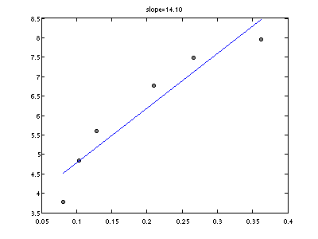flowMatrix_bubbleBeads_1.mat 10 ml of odour and the rest is beads. So beads are half way up the vial.
Now we put glass beads into the 1:100 dilution and measure that. flowMatrix_bubbleBeads_1in100.mat This looks way worse. Really not as nice.
flipValve(11,1) %allow air through air vial setFlow(AC,0.5,'AB') %1 LPM total flow. %Record flow data for 10 seconds at output of odour vials. output=pollFM(AC,'G',0.2,5*10); hist([output.volumetricFlow]) mean is 1.02. So that's fine.
needle1 Now we measure flow after the first suction point. Oh dear. The flow is oscilating in a saw-tooth manner.
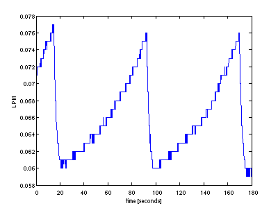|
needle2a Now we measure at the end of the second needle valve point but with the flow set up as before (with 1 LPM going into the first needle valve). 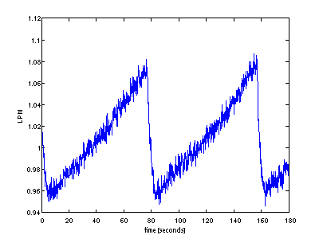 |
needle2b Now I will close the tap feeding olfactometer air to the second needle valve and run again. Argh, it also saw-tooths: 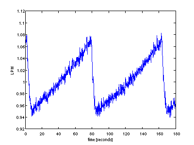 |
|
Now I'll remove the second needle valve and see how the 5 LPM air flow responds with the ~70 ml/min injected into it. needle2c: So this is measuring the output straight from the Aalborg 5 SLPM. Stable 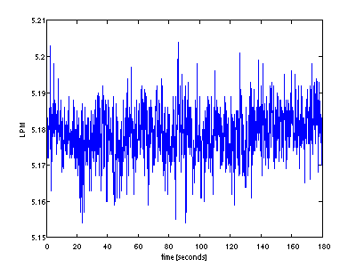 |
Now open the valve adding flow from the first needle valve and see what we add: needle2d It appears to be adding only about 20 ml, which isn't right 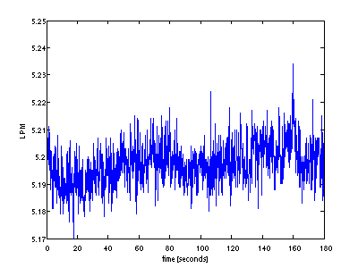 |
Does the oscilation go away if the MFC doesn't go via the olfactometer? No, it still happens: direct.mat. It changes by about 10 ml/min
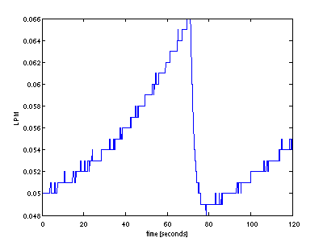Let's do some more checks. Ok, now I set B to loop pressure and see the flow through the first needle valve. It's fairly stationary. directPressureLoop2.mat
Now it's time to add a needle valve to vacuum and see how the measurement goes at the other side of the Y:
-> needle
/
MFC B ----
\
-> Flow Meter
The signal at the FM is not stationary: directPressureLoop_3.mat. It's saw-toothing. It appears to be doing it in discrete steps but when we put the analogue signal on the scope it becomes obvious that we're just looking at rounding artefacts.
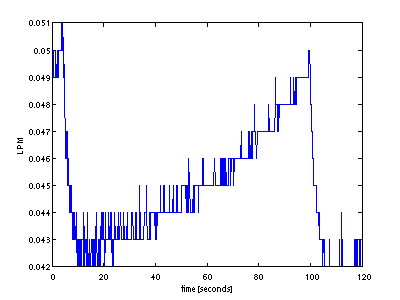Ok. I set the first needle valve to about 0.044 (mean, it saw-tooths). When I inject this into either 1 SLPM or 4.9 SLPM I see an increased flow of 39 - 40 LPM. Good!
|
Talked to Neil at Alicat. He had me change the P, D, and I parameters on the MFC (it was B) but the effect still occured. It turned out that the saw tooths come from pressure build-ups that occur when the system is connected to a flow meter. I see volume and mass flow oscilations in the flow meter and in themass flow of the MFC. I don't see them in the volumetric flow of the MFC. If I disconnect the meter, the fluctuations in the mass flow go away: oscilationExplanation.mat |
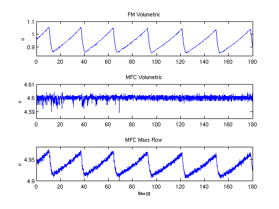 |
I have checked the flows (above) and as far as I can tell, they add up as they should. So I really am injecting 50ml in to 5000ml. I will now record (AGAIN!) with the PID. First at the output of the odour delivery system where flow is at 1 LPM, and again at the output of the whole system where I should be getting 1/100 of that value.
diltutionTest.matRighto. Now we need to confirm that we really did add 50 ml to 5 L. I'm pretty sure that I'm producing about 42-53 ml from the first needle valve. So I'll measure flow rate at the second with the tap open and closed.
|
secondDirect - Connect 5SLPM meter to 5LPM flow controller to see how much flow we get. It seems pretty stable at 5.57 (don't know why it's not 5, that's where the controller is (4.9). 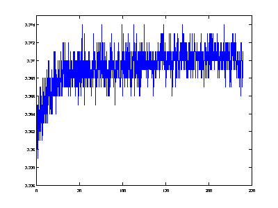 |
secondNeedle - Connect 5SLPM meter to needle valve and 5LPM flow controller. So now we're seeing what flow rates we'd see without adding the odour dilution. This will oscilate. Now we add in the odour: secondNeedlePlusOlf 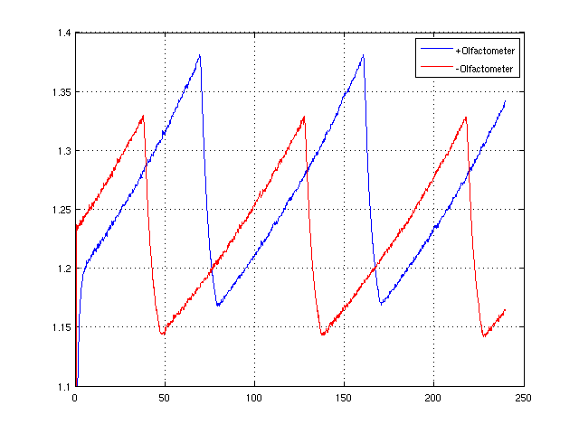 I think I'm getting about 24 ml/min of extra flow here. Ok... So this is sort of what we want. Don't forget that the second needle valve is carrying away a steady 4950. If we add 50 ml/min then it's not the case that 40 ml of this goes to vacuum and 10 ml goes to the fly. All extra 50 ml go to the fly. |
save dilutionCheck_1706 secondDirect secondNeedle secondNeedlePlusOlf
So what does the PID response look like? Wow, just like the one I recorded earlier! It's 1:14. Oh no it's not! See below..
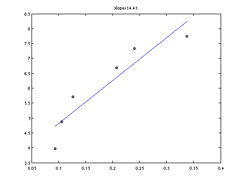A concentration series from 0.5 lpm to 9 ml/min out of the vials looks like this:
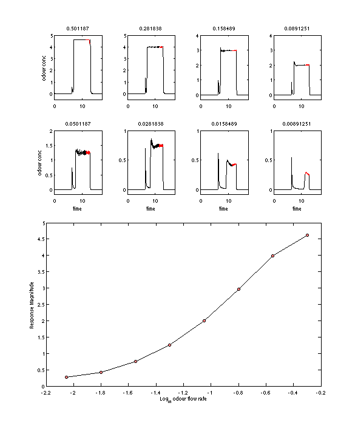 See dilutionsGood and calibrations2106Since we can push low flow rates through the vials we will record the signal out of the vials (where flow is 1 lpm) at flows of about 5 ml/min (0.005). We will then present 0.5, 100 times this, and record after the second air dilution (which reduces concentration by a factor of 100). The magnitudes of the two signals should be similar.
At the second dilution point we record 0.5 as being ~0.36 V. At the first dilution we record 0.005 as being about 0.2V, so the signal at the second dilution seems somewhat strong. It corresponds to 10ml not 5 ml. Nevertheless, it's close and I'm pretty sure we can make it the same if the dilutions are done more carefully. Having a better second needle valve would be a high priority.
| 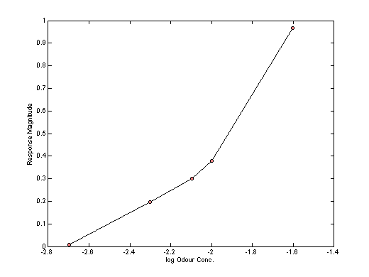 First dilution: 0.6 to 0.3 saturated vapour. | 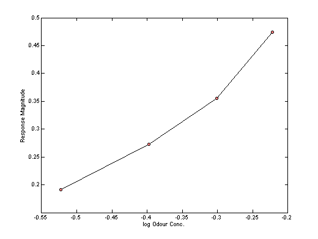 Second dilution [log10(0.5) = -0.3] |